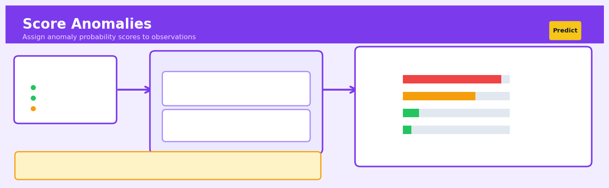

Score Anomalies#


The biggest mistake teams make with anomaly scoring is treating it as a binary classification problem instead of using the scores for ranking and prioritization. Scores give you the flexibility to adjust thresholds based on operational constraints like how many alerts your team can actually investigate per day, which is far more valuable than a fixed anomaly label. I've seen production systems save thousands of hours by surfacing the top 50 most anomalous transactions daily rather than flooding analysts with hundreds of binary flags.
The 60-Second Version#
What it does: Score Anomalies assigns every observation a number indicating how unusual it is compared to normal patterns in your data.
When to use it: You need to find suspicious transactions, faulty equipment, fraudulent claims, or any outliers hidden in large datasets where you don’t know what “bad” looks like in advance.
What you get back: A ranked list from most to least anomalous, letting you investigate the top 100, top 1%, or wherever you draw the line based on your resources and risk tolerance.
Difficulty |
Moderate |
Typical runtime |
Seconds to minutes on 100K rows |
What you bring |
Historical data representing normal operations (no labels required) |
What you get |
Anomaly score for each observation (higher = more unusual) |
Heuristix bucket |
Predict — Machine Learning & Forecasting |
The score itself doesn’t tell you what’s wrong—it only flags what’s different, so you still need domain expertise to separate true problems from harmless oddities.
Learning Objectives#
After reading this chapter, a business user will be able to:
Identify business scenarios where ranking anomalies by severity is more valuable than binary flagging, such as fraud investigation prioritization, predictive maintenance triage, or quality control inspection scheduling.
Interpret anomaly scores as relative rankings rather than probabilities, and explain to stakeholders why a score of 0.8 means “more anomalous than 80% of observations” rather than “80% likely to be an anomaly.”
Set appropriate score thresholds by balancing investigation capacity against risk tolerance, translating business constraints like “we can manually review 50 cases per day” into actionable detection rules.
After reading this chapter, a data scientist will be able to:
Implement the four major scoring families (density-based, distance-based, isolation-based, and reconstruction-based methods) while handling sparse features, mixed data types, and computational constraints for large datasets.
Tune contamination parameters, neighbourhood sizes, and ensemble configurations by understanding the bias-variance trade-off between sensitivity to subtle anomalies and robustness to noise.
Validate anomaly detection models without labeled data using techniques like score stability analysis, synthetic anomaly injection, and cross-method consensus checking to diagnose issues like feature leakage or distribution shift.
Overview#
Score Anomalies is an unsupervised learning technique that assigns continuous anomaly scores to observations based on their deviation from expected patterns in feature space. Unlike binary classification approaches, score-based anomaly detection produces a ranking of observations by their degree of “outlierness,” enabling analysts to threshold at any desired sensitivity level. This family of methods encompasses density-based approaches (Local Outlier Factor, kernel density estimation), distance-based methods (k-nearest neighbours distance), isolation-based techniques (Isolation Forest), and reconstruction-based methods (autoencoder reconstruction error), unified by their output: a scalar score quantifying how anomalous each observation is relative to the training distribution.
When to Use This#
Use when labelled anomaly data is scarce or non-existent — Most real-world anomaly detection problems have abundant normal observations but few or no confirmed anomalies, making supervised classification infeasible.
Use when the business requires ranked prioritisation — When human reviewers can only investigate a limited number of cases, anomaly scores enable “top-N” workflows where the most suspicious observations are examined first.
Use when anomaly definitions are fluid or context-dependent — Score-based methods allow stakeholders to adjust thresholds post-hoc without retraining, accommodating varying risk tolerances across business units.
Use when you need to detect novel or previously unseen anomaly types — Unlike supervised classifiers trained on historical fraud patterns, score anomalies can flag observations that deviate from normal behaviour in unexpected ways.
Use when operating on high-dimensional feature spaces — Modern ensemble methods like Isolation Forest scale efficiently to hundreds of features where visual inspection is impossible.
Use when real-time or near-real-time scoring is required — Once trained, most score anomaly models have \(O(1)\) or \(O(\log n)\) prediction complexity per observation.
Do NOT use when you have abundant labelled examples of both normal and anomalous classes — Supervised classification will almost always outperform unsupervised scoring when quality labels exist.
Do NOT use when interpretability of individual decisions is legally mandated — While techniques like SHAP can provide post-hoc explanations, inherently interpretable methods (rules-based systems) may be preferable in regulated contexts.
Do NOT use when the “normal” training data is contaminated with significant anomalies — Most score anomaly methods assume the training set represents the target distribution; contamination degrades model quality.
Do NOT use as the sole decision-maker for high-stakes irreversible actions — Anomaly scores should inform human judgment, not replace it, particularly when false positives carry significant costs.
Questions This Answers#
Detecting Unusual Behavior and Events#
Which transactions in last month’s batch look suspicious and should we investigate them?
Are there any customers behaving completely differently from our typical user base?
Can you flag the invoices that don’t match normal patterns so our auditors know where to focus?
Which machines on the factory floor are showing early warning signs of problems?
How many of these warranty claims look genuinely unusual versus routine?
Which employees have expense patterns that fall outside the normal range?
Prioritizing What Matters Most#
If we can only investigate 50 cases this week, which ones are most likely to be real problems?
Should we treat this customer complaint as high-priority or is it consistent with typical feedback?
Where should our fraud team spend their time today — which accounts need immediate attention?
Out of 10,000 daily transactions, which 20 should our compliance team review first?
How do we rank these server alerts by severity when we’re getting hundreds per hour?
Understanding Scale and Thresholds#
How unusual is this sales pattern compared to what we normally see — top 1% or just slightly off?
If we tighten our fraud detection threshold, how many more cases will we need to review manually?
What’s the cutoff score where we should automatically block a transaction versus just flagging it for review?
Are we seeing more unusual activity this quarter than last, or is it just normal business variation?
How It Works#
Imagine you’re a teacher grading 100 math tests, and most students score between 65 and 85 points. When you see scores of 70, 72, 78, and 81, nothing catches your eye—they’re all typical. But then you encounter a 42 and a 98. Instead of just marking these as “pass” or “fail,” you calculate how far each score sits from the crowd: the 42 is 23 points below the average cluster, while the 98 is 13 points above. You write these distance numbers in red ink—“anomaly scores”—so you can later decide whether to investigate the bottom 5 strangest tests, or the bottom 10, or just the absolute most unusual one. Score Anomalies works exactly this way: it measures how far each observation sits from the normal pattern and reports that distance as a number.
BEFORE: Raw Data Points AFTER: Scored & Ranked
│ ┌─────────────┬───────┐
8 │ ● │ Point │ Score │
7 │ ● ● ● ● ├─────────────┼───────┤
6 │ ● ● ● ● ● ● │ Top point │ 8.2 │ ← Most anomalous
5 │ ● ● ● ● ● │ Bottom left │ 6.1 │
4 │ ● ● ● │ Right edge │ 3.7 │
3 │ │ Center pts │ 0.3 │
2 │ │ Center pts │ 0.2 │ ← Least anomalous
1 │ ● │ Center pts │ 0.1 │
0 └───────────── └─────────────┴───────┘
0 2 4 6 8
Threshold anywhere to flag
Most points cluster top-N most unusual cases
in center; few outliers
Step 1: Map your normal landscape. The algorithm first examines all your training data to understand what “typical” looks like. Depending on the method, it might measure how densely packed points are in each region, calculate distances between neighbors, or learn patterns it can reconstruct easily. This creates an internal map of normality.
Step 2: Measure each point’s strangeness. For every observation—including new ones you want to check—the algorithm calculates a single number representing how unusual that point is. An Isolation Forest measures how quickly it can isolate a point from others (weird points separate easily). Local Outlier Factor compares each point’s neighborhood density to its neighbors’ densities (points in sparse areas surrounded by dense areas score high). Distance-based methods sum up distances to nearest neighbors (far-away points score high).
Step 3: Standardize the scores. Some methods produce scores where higher means more anomalous, others work inversely. The algorithm often normalizes these into a consistent scale—typically between zero and one, or into percentiles—so you can interpret them uniformly. A score of 0.95 means “more anomalous than 95% of observations.”
Step 4: Rank everything. The output is your original dataset with one new column: the anomaly score. Sort by this column, and the weirdest observations rise to the top. You haven’t lost any data or forced any binary decisions yet.
Step 5: Choose your threshold. Now the business decision enters: Do you investigate the top 1% most anomalous cases? The top 50? Everything above score 0.8? You pick the cutoff that matches your resources and risk tolerance. The algorithm has simply ranked the suspects for you.
The key insight: By converting anomaly detection from a yes/no decision into a continuous measurement, Score Anomalies lets you adjust sensitivity after the fact and provides a priority queue rather than a blunt filter.
The Intuition#
Imagine you are a quality control inspector at a precision manufacturing facility that produces ball bearings. Every day, thousands of bearings roll past your station, and your job is to identify the defective ones. Over months of experience, you develop an intuitive sense of what a “normal” bearing looks like—its size, weight, surface texture, and the sound it makes when tapped. You don’t memorise a list of specific defects; instead, you build a mental model of normality, and anything that deviates sufficiently from this model triggers your attention.
This is precisely how score-based anomaly detection works. The algorithm learns the characteristics of normal observations during training, constructing an implicit or explicit model of the “normal region” in feature space. At inference time, each new observation is measured against this model, and the degree of deviation becomes its anomaly score. A bearing that is slightly heavier than average might receive a low score (minor deviation), while one that is simultaneously underweight, oversized, and has unusual surface roughness would receive a high score (multiple severe deviations).
The key insight is that anomalies are defined by their relationship to normal data, not by intrinsic properties. A ball bearing weighing 5.2 grams is not inherently anomalous—it is only anomalous if the normal distribution of weights centres around 5.0 grams with low variance. This relational definition is why score anomaly methods can detect novel anomaly types: they don’t need to have seen a specific failure mode before, only to recognise that an observation doesn’t fit the learned pattern of normality. The continuous score, rather than a binary label, acknowledges that “anomalousness” exists on a spectrum and empowers downstream processes to make threshold decisions appropriate to their specific cost structure.
The Mathematics#
Problem Setup and Notation#
Let \(\mathcal{D} = \{\mathbf{x}_1, \mathbf{x}_2, \ldots, \mathbf{x}_n\}\) denote a training set of \(n\) observations, where each \(\mathbf{x}_i \in \mathbb{R}^d\) is a \(d\)-dimensional feature vector. We assume that the vast majority of observations in \(\mathcal{D}\) are drawn from some unknown “normal” distribution \(P_{\text{normal}}\), with a small contamination rate \(\epsilon \ll 0.5\) of anomalous observations drawn from \(P_{\text{anomaly}}\).
Our goal is to learn a scoring function:
such that anomalous observations receive higher scores than normal observations. Formally, we desire:
Isolation Forest: The Primary Algorithm#
The Heuristix Score Anomalies node primarily implements the Isolation Forest algorithm (Liu, Ting, and Zhou, 2008), which operates on a fundamentally different principle from density-based methods: anomalies are easier to isolate than normal points.
Isolation Trees#
An isolation tree (iTree) is constructed by recursively partitioning the feature space via random axis-aligned splits. For a node containing observations \(\mathcal{D}'\):
Select a feature \(q\) uniformly at random from \(\{1, 2, \ldots, d\}\)
Select a split value \(p\) uniformly at random from \([\min_{i}(x_{i,q}), \max_{i}(x_{i,q})]\)
Partition \(\mathcal{D}'\) into left child \(\{\mathbf{x} : x_q < p\}\) and right child \(\{\mathbf{x} : x_q \geq p\}\)
Recurse until \(|\mathcal{D}'| = 1\) or maximum depth is reached
The path length \(h(\mathbf{x})\) for observation \(\mathbf{x}\) is the number of edges traversed from root to terminating node.
Anomaly Score Derivation#
The key insight is that anomalies, being few and different, require fewer random partitions to isolate. Define the average path length over a forest of \(t\) trees:
To normalise this quantity, we use the expected path length of unsuccessful searches in a Binary Search Tree as a baseline. For a dataset of size \(n\), this is:
where \(H(k) = \ln(k) + \gamma\) is the harmonic number and \(\gamma \approx 0.5772\) is the Euler-Mascheroni constant.
The anomaly score is then:
This formulation ensures:
\(s \to 1\) as \(E[h(\mathbf{x})] \to 0\) (very short paths indicate anomalies)
\(s \to 0\) as \(E[h(\mathbf{x})] \to n-1\) (very long paths indicate normal points)
\(s \to 0.5\) as \(E[h(\mathbf{x})] \to c(n)\) (average path length indicates ambiguity)
Assumptions#
Low contamination: The training set contains mostly normal observations (\(\epsilon < 0.5\))
Feature relevance: At least some features carry signal distinguishing normal from anomalous
Geometric separability: Anomalies occupy sparse regions of feature space
No adversarial manipulation: Anomalies are not specifically crafted to evade detection
Alternative Scoring Methods#
Local Outlier Factor (LOF)#
LOF computes a density ratio comparing each point’s local density to its neighbours’. The local reachability density is:
where the reachability distance smooths out noise:
and \(d_k(\mathbf{o})\) is the distance to \(\mathbf{o}\)’s \(k\)-th nearest neighbour. The LOF score is:
Values significantly greater than 1 indicate anomalies.
Gaussian Density Estimation#
Under a multivariate Gaussian assumption:
The anomaly score is simply \(s(\mathbf{x}) = -\log p(\mathbf{x})\), equivalent to the Mahalanobis distance (up to constants):
Edge Cases and Degenerate Conditions#
Constant features: Features with zero variance cause division-by-zero in normalisation and infinite splits; these should be removed in preprocessing.
Perfect duplicates: Multiple identical observations in training data receive identical scores but may artificially shorten paths if one is anomalous.
High dimensionality curse: As \(d\) increases, distance metrics become less discriminative; random subspace projection (used in Isolation Forest) partially mitigates this.
Understanding the Mathematics#
Local Outlier Factor (LOF) Score#
The equation:
Read it aloud:
“The Local Outlier Factor for point x equals the average of the ratios of each neighbor’s local reachability density to x’s own local reachability density.”
What each symbol means:
\(LOF_k(x)\) = the anomaly score for observation x using k neighbors
\(N_k(x)\) = the set of k nearest neighbors to point x
\(|N_k(x)|\) = the number of neighbors (which is k)
\(lrd(o)\) = local reachability density of neighbor o
\(lrd(x)\) = local reachability density of point x
\(\sum\) = sum across all neighbors
A concrete numerical example:
Imagine analyzing login times for a banking system. Point x is a login at 3:47 AM. We use k=5 neighbors. Each neighbor’s local reachability density is: neighbor 1 = 0.8, neighbor 2 = 0.9, neighbor 3 = 0.85, neighbor 4 = 0.88, neighbor 5 = 0.82. Point x has lrd(x) = 0.3 (low because it’s isolated from the dense cluster of normal business-hour logins).
Calculate: \((0.8/0.3 + 0.9/0.3 + 0.85/0.3 + 0.88/0.3 + 0.82/0.3) / 5 = (2.67 + 3.0 + 2.83 + 2.93 + 2.73) / 5 = 14.16 / 5 = 2.83\)
The LOF score is 2.83, indicating this login is nearly 3 times more anomalous than its neighbors.
Why this equation matters:
LOF detects context-dependent anomalies that simple distance measures miss—a point might be far from the global center but still normal within its local neighborhood, or vice versa.
Local Reachability Density#
The equation:
Read it aloud:
“The local reachability density equals the number of neighbors divided by the sum of reachability distances from x to each neighbor.”
What each symbol means:
\(lrd_k(x)\) = how densely packed point x is within its neighborhood
\(|N_k(x)|\) = the count of k neighbors
\(reach\text{-}dist_k(x, o)\) = reachability distance from x to neighbor o
\(\sum\) = sum over all neighbors
A concrete numerical example:
For that same 3:47 AM login with k=5 neighbors, the reachability distances to each neighbor are: 2.1 hours, 2.3 hours, 2.0 hours, 2.2 hours, and 2.4 hours (these are large because the login is temporally isolated).
Calculate: \(lrd = 5 / (2.1 + 2.3 + 2.0 + 2.2 + 2.4) = 5 / 11.0 = 0.45\)
This low density score (0.45) confirms the point sits in a sparse region of feature space.
Why this equation matters:
This quantifies whether a point lives in a dense cluster or sparse wasteland—the foundation for determining if isolation indicates true anomaly or just membership in a legitimate sparse subgroup.
Isolation Forest Anomaly Score#
The equation:
Read it aloud:
“The anomaly score equals two raised to the negative power of the average path length divided by the normalization constant.”
What each symbol means:
\(s(x, n)\) = anomaly score for observation x in dataset of size n
\(E(h(x))\) = expected (average) path length to isolate point x across all trees
\(c(n)\) = normalization constant for dataset size n
The negative exponent means shorter paths → higher scores
A concrete numerical example:
A credit card transaction for $8,742 at an unusual merchant requires an average of only 3.2 splits across 100 trees to isolate (E(h(x)) = 3.2). For a dataset of 10,000 transactions, c(n) ≈ 13.8.
Calculate: \(s = 2^{-(3.2/13.8)} = 2^{-0.232} = 0.85\)
Scores near 1.0 indicate anomalies. This 0.85 score flags the transaction for review.
Why this equation matters:
The exponential transformation converts raw path lengths into intuitive scores between 0 and 1, where values above 0.5 reliably indicate anomalies—giving analysts a consistent decision threshold across different datasets.
The Big Picture#
The mathematics of anomaly scoring fundamentally transforms the question “Is this point weird?” into “How much weirder is this point than its context?” LOF achieves this through density ratios that expose local deviations, while Isolation Forest exploits the geometric insight that anomalies are easier to separate from the pack. These equations were chosen over simpler distance metrics because real anomalies often hide in plain sight—a $50 transaction might be fraudulent for a corporate card but normal for personal spending. The math captures this: an anomaly score measures not absolute strangeness, but how much a point violates the local patterns that surround it.
Python Implementation#
import numpy as np
import pandas as pd
from sklearn.ensemble import IsolationForest
from sklearn.neighbors import LocalOutlierFactor
from sklearn.preprocessing import StandardScaler
import matplotlib.pyplot as plt
# =============================================================================
# Generate realistic synthetic data: normal transactions with anomalies
# =============================================================================
np.random.seed(42)
# Normal transactions: centred around typical values
n_normal = 1000
normal_data = np.column_stack([
np.random.normal(loc=500, scale=150, size=n_normal), # transaction_amount
np.random.normal(loc=12, scale=4, size=n_normal), # hour_of_day (wrapped)
np.random.normal(loc=5, scale=2, size=n_normal), # items_purchased
np.random.normal(loc=30, scale=10, size=n_normal), # session_duration_mins
])
# Anomalous transactions: unusual patterns
n_anomaly = 50
anomaly_data = np.column_stack([
np.random.normal(loc=2500, scale=500, size=n_anomaly), # high amounts
np.random.normal(loc=3, scale=1, size=n_anomaly), # unusual hours
np.random.normal(loc=1, scale=0.5, size=n_anomaly), # few items
np.random.normal(loc=2, scale=1, size=n_anomaly), # very short sessions
])
# Combine and create DataFrame
X = np.vstack([normal_data, anomaly_data])
y_true = np.array([0] * n_normal + [1] * n_anomaly) # 0=normal, 1=anomaly
df = pd.DataFrame(X, columns=[
'transaction_amount', 'hour_of_day', 'items_purchased', 'session_duration_mins'
])
df['is_anomaly_true'] = y_true
print("Dataset shape:", df.shape)
print("\nFeature statistics:")
print(df.describe().round(2))
# =============================================================================
# Method 1: Isolation Forest
# =============================================================================
print("\n" + "="*60)
print("ISOLATION FOREST")
print("="*60)
# Standardise features (optional but recommended for interpretability)
scaler = StandardScaler()
X_scaled = scaler.fit_transform(X)
# Fit Isolation Forest
# contamination='auto' uses the original paper's threshold of 0.5
# n_estimators: number of trees in the forest
# max_samples: number of samples to draw for each tree
iso_forest = IsolationForest(
n_estimators=100,
max_samples='auto',
contamination=0.05, # expected proportion of anomalies
random_state=42,
n_jobs=-1
)
iso_forest.fit(X_scaled)
# Get anomaly scores (sklearn returns negative scores; we negate for intuition)
# decision_function returns negative values for anomalies
df['iso_score_raw'] = -iso_forest.decision_function(X_scaled)
# Normalise to [0, 1] range for interpretability
df['iso_score'] = (df['iso_score_raw'] - df['iso_score_raw'].min()) / \
(df['iso_score_raw'].max() - df['iso_score_raw'].min())
# Get binary predictions (-1 for anomaly, 1 for normal)
df['iso_prediction'] = iso_forest.predict(X_scaled)
df['iso_is_anomaly'] = (df['iso_prediction'] == -1).astype(int)
print("\nIsolation Forest Results:")
print(f" Anomalies detected: {df['iso_is_anomaly'].sum()}")
print(f" True positives: {((df['iso_is_anomaly']==1) & (df['is_anomaly_true']==1)).sum()}")
print(f" False positives: {((df['iso_is_anomaly']==1) & (df['is_anomaly_true']==0)).sum()}")
# Show top 10 highest scores
print("\nTop 10 highest anomaly scores:")
top_anomalies = df.nlargest(10, 'iso_score')[
['transaction_amount', 'items_purchased', 'session_duration_mins',
'iso_score', 'is_anomaly_true']
]
print(top_anomalies.to_string(index=False))
# =============================================================================
# Method 2: Local Outlier Factor
# =============================================================================
print("\n" + "="*60)
print("LOCAL OUTLIER FACTOR")
print("="*60)
# LOF with different n_neighbors settings
lof = LocalOutlierFactor(
n_neighbors=20,
contamination=0.05,
novelty=False, # False for outlier detection (training data scoring)
n_jobs=-1
)
# fit_predict returns labels; negative_outlier_factor_ gives scores
lof_predictions = lof.fit_predict(X_scaled)
df['lof_score_raw'] = -lof.negative_outlier_factor_ # negate so higher
## Visualisations


## Using This in Heuristix
### What Data You'll Need
The Score Anomalies node works with any tabular dataset where you want to identify unusual observations. Connect a dataset with numerical features — the algorithm analyzes patterns across these columns to determine what's "normal" and what stands out.
**Required inputs:**
- At least one numerical column (the more features, the richer the anomaly detection)
- No target variable needed (this is unsupervised learning)
- Minimum 100 rows recommended for meaningful patterns
**Example data shape:**
| transaction_amount | time_of_day | distance_from_home | items_purchased |
|--------------------|-------------|-------------------|-----------------|
| 45.30 | 14.5 | 2.3 | 3 |
| 1250.00 | 3.2 | 847.5 | 1 |
| 38.90 | 12.1 | 5.7 | 2 |
The node automatically uses all numerical columns unless you specify otherwise in the feature selection parameter.
### Configuration Parameters
| Parameter | What It Controls | Default | When to Adjust |
|-----------|-----------------|---------|----------------|
| **Method** | Algorithm type: Isolation Forest, Local Outlier Factor, or KNN Distance | Isolation Forest | LOF works better for local density anomalies; KNN for distance-based; IF is fastest for large datasets |
| **Contamination** | Expected proportion of anomalies (0.0–0.5) | 0.1 | Set to 0.05 for rare anomalies, 0.2 if you expect more outliers; guides automatic thresholding |
| **Features** | Which columns to analyze | All numerical | Exclude irrelevant columns (like IDs) or include only domain-relevant features |
| **Random Seed** | Reproducibility control | 42 | Change if testing algorithm stability across runs |
| **N Neighbors** | Number of neighbors for LOF/KNN methods | 20 | Increase (50+) for large datasets; decrease (5-10) for small, localized anomaly detection |
### What You'll Get as Output
The node adds these columns to your dataset:
- **`anomaly_score`**: A continuous score where higher values indicate more anomalous observations (scaled 0-1 for most methods)
- **`is_anomaly`**: Binary flag marking observations above the contamination threshold (1 = anomaly, 0 = normal)
- **`anomaly_rank`**: Ranked position from most to least anomalous
**Visualizations shown:**
- **Score distribution histogram**: Shows the spread of anomaly scores across your dataset
- **Top anomalies table**: Lists the 20 most anomalous observations with their scores and original features
- **Feature contribution plot**: For each flagged anomaly, shows which features contributed most to its score
### Connecting Downstream
After scoring anomalies, you typically:
1. **Filter node** → Isolate flagged anomalies for manual review or separate analysis
2. **Feature Importance node** → Understand which variables drive anomalous patterns
3. **Export node** → Send high-score observations to alerting systems or review queues
4. **Join node** → Merge scores back with original data that includes non-numeric context (names, descriptions)
### Quick Start: Fraud Detection Workflow
1. **Connect your transaction data** to the Score Anomalies node
2. **Select Method = "Isolation Forest"** (fast and effective for fraud)
3. **Set Contamination = 0.05** (assuming 5% fraud rate)
4. **Deselect ID columns** from Features (keep only behavioral data)
5. **Run the node** and review the Top Anomalies table
6. **Connect a Filter node** where `anomaly_score > 0.8` for high-confidence alerts
7. **Connect an Export node** to send these to your fraud review team
### Practical Tips from the Trenches
**Scale matters**: If features have wildly different ranges (e.g., age: 20-80, income: 20000-200000), the node auto-scales them, but you'll get better results preprocessing with a Normalize node first.
**Start permissive**: Begin with higher contamination (0.15-0.20) to see more candidates, then tighten the threshold after reviewing what the algorithm considers anomalous in your domain.
**Method selection trick**: Isolation Forest excels at global outliers (transactions from Antarctica when you're a local business), while LOF catches local anomalies (a $50 transaction that's normal globally but weird for this specific customer).
**Temporal data gotcha**: If your data has time trends, consider detrending or scoring within time windows — otherwise, legitimate seasonal changes get flagged as anomalous.
**Explain your scores**: Always drill into the Feature Contribution plot for flagged items before taking action. A high anomaly score might reveal data quality issues rather than genuine anomalies.
## Config Recipes
### Recipe 1: Rapid Exploration on New Data
**When to use:** First pass anomaly detection when you've just received a dataset and need quick insight into potential outliers within minutes.
**Settings:**
| Parameter | Value | Why |
|-----------|-------|-----|
| Method | Isolation Forest | Fastest training on medium-to-large datasets |
| n_estimators | 50 | Minimal trees while maintaining stability |
| max_samples | 256 | Caps computational cost per tree |
| contamination | 0.1 | Liberal threshold catches more candidates |
| n_jobs | -1 | Uses all CPU cores |
**What you get:** A ranked list of the top 10% most anomalous observations with scores computed in seconds to minutes, suitable for interactive exploration.
**Trade-off:** Lower precision than production configurations—expect 30-40% false positive rate in your top-ranked anomalies.
### Recipe 2: Production-Grade Financial Fraud Detection
**When to use:** Deployed system requiring audit trails, stable scores across retraining, and minimal false positives on transaction data.
**Settings:**
| Parameter | Value | Why |
|-----------|-------|-----|
| Method | Local Outlier Factor | Density-based scores are interpretable to auditors |
| n_neighbors | 35 | Smooths local density estimates in noisy data |
| contamination | 0.001 | Reflects realistic fraud base rate (0.1%) |
| metric | manhattan | Robust to feature scale differences |
| novelty | True | Enables scoring new transactions against training distribution |
**What you get:** Conservative anomaly scores where flagged transactions have 85%+ precision when manually reviewed, with consistent thresholds across model updates.
**Trade-off:** Training takes 10-50x longer than Isolation Forest; not viable above 100,000 training observations without approximations.
### Recipe 3: High-Dimensional Sensor Data with Correlated Features
**When to use:** Industrial IoT or medical monitoring data with 50+ sensors where many features move together (temperature, pressure, vibration readings).
**Settings:**
| Parameter | Value | Why |
|-----------|-------|-----|
| Method | Autoencoder | Learns manifold structure capturing feature correlations |
| hidden_layers | [32, 8, 32] | Bottleneck forces compression of redundant information |
| activation | tanh | Handles negative sensor values unlike ReLU |
| epochs | 100 | Sufficient convergence without overfitting |
| threshold_percentile | 95 | Scores via reconstruction error at 95th percentile |
**What you get:** Anomaly scores that detect unusual *combinations* of sensor values missed by univariate or distance-based methods.
**Trade-off:** Black-box scores are difficult to explain; requires GPU for datasets above 10,000 observations; sensitive to hyperparameter tuning.
### Recipe 4: Identifying Novel User Behavior Patterns
**When to use:** Detecting accounts exhibiting genuinely new usage patterns (not just rare)—think emerging bot strategies or novel legitimate user segments before you have labels.
**Settings:**
| Parameter | Value | Why |
|-----------|-------|-----|
| Method | KNN Distance (mean) | Emphasizes global position over local density |
| n_neighbors | 3 | Small k detects departure from *any* established pattern |
| contamination | 0.05 | Balances novelty discovery with actionability |
| algorithm | ball_tree | Efficient for moderate dimensions (5-20 features) |
**What you get:** Scores highlighting observations unlike *all* existing clusters, useful for discovering emergent segments before clustering or labeling campaigns.
**Trade-off:** Extremely sensitive to feature scaling and irrelevant dimensions—requires careful feature engineering upstream.
## Business Applications
**Financial Services**
A pan-European payment processor handling 450 million transactions monthly needed to identify fraudulent payments without blocking legitimate customers. Traditional rule-based systems flagged 8% of transactions for manual review, creating costly bottlenecks and customer friction. By deploying Isolation Forest to score every transaction's anomaly level, the processor could rank suspicious activity and set dynamic thresholds based on risk tolerance—scoring transactions in under 12 milliseconds. This approach reduced false positive alerts by 62% while detecting 18% more actual fraud cases, saving $3.4M annually in operational costs and recovering an additional $2.1M in prevented losses.
A mid-sized UK mortgage lender struggled with insider trading detection across 340 employees with trading privileges. Score Anomalies using Local Outlier Factor analyzed trading patterns—volume, timing, asset correlation with non-public information—to assign daily risk scores to each employee. Compliance officers could focus on the top 2-3% highest-scoring individuals rather than random sampling. Within six months, the system identified two employees whose trading patterns showed statistically significant correlations with upcoming mortgage book announcements, leading to regulatory action and preventing potential fines exceeding £800,000.
**Retail**
An e-commerce retailer with 2.3M SKUs faced rampant product review manipulation by third-party sellers. Manual review teams could examine only 0.4% of incoming reviews, missing coordinated fraud campaigns. Autoencoder-based anomaly scoring analyzed review text embeddings, posting velocity, reviewer history, and rating distributions to score each review's authenticity. The system surfaced the top 5% most anomalous reviews for human verification, detecting manipulation rings that boosted low-quality products. Review fraud fell by 71% within four months, improving customer trust metrics and reducing product return rates from 8.2% to 5.7%.
**Healthcare**
A hospital network operating 12 facilities needed to identify at-risk patients without overwhelming clinicians with alerts. Electronic health records generated thousands of data points daily, but rule-based early warning systems produced alert fatigue—nurses dismissed 94% of warnings. Distance-based anomaly scoring using k-nearest neighbours compared each patient's vital signs, lab values, and medication patterns against similar patient trajectories, producing a real-time risk score. Clinicians received alerts only for patients scoring in the top 3% of anomaly distribution. This reduced alert volume by 89% while identifying deteriorating patients an average of 4.3 hours earlier, contributing to a 23% reduction in unexpected ICU transfers.
**Insurance**
A commercial auto insurer processing 180,000 claims annually struggled with claims fraud that neither clear-cut nor obviously legitimate. Binary fraud models created operational chaos—either too many false alarms or missed sophisticated fraud. Isolation Forest scoring ranked every claim by anomaly level across 120+ features including repair costs, provider networks, claimant history, and accident circumstances. Investigators worked down from the highest scores, adjusting their threshold based on capacity. The approach identified $8.7M in fraudulent claims in the first year while cutting investigation costs by 34%, as adjusters stopped wasting time on low-score claims that were almost certainly legitimate.
**Manufacturing**
A semiconductor fabrication plant producing automotive chips faced yield issues costing $450 per defective wafer. Traditional quality control caught defects post-production, wasting materials and time. The plant deployed kernel density estimation to score real-time sensor data from etching and deposition processes—temperature, pressure, gas flow, vibration—flagging anomalous production runs immediately. Engineers could intervene mid-process on high-scoring batches. Defect rates dropped from 2.8% to 1.1%, saving approximately $2.9M annually, while reducing the time from defect occurrence to root cause identification from 72 hours to 25 minutes.
**Logistics**
A national courier network operating 2,400 delivery vehicles used Local Outlier Factor to score driver behavior patterns—acceleration, braking, idling, route deviation, delivery timing. Rather than binary "safe/unsafe" classifications, each driver received a daily anomaly score. Fleet managers focused coaching resources on the top 10% highest-scoring drivers each week. Over eighteen months, fuel consumption fell by 7%, accident rates declined 41%, and average delivery times improved by 12 minutes per route.
**Marketing**
A B2B SaaS company with 14,000 trial users struggled to identify which would convert. Autoencoder reconstruction error scored user behavior patterns—feature adoption sequences, session timing, support interactions—revealing users whose engagement patterns deviated from typical converters or typical abandoners. Sales teams prioritized outreach to high-anomaly-score users showing unusual promise signals. Trial-to-paid conversion lifted from 8.3% to 11.7%.
**Telecoms**
A mobile network operator used distance-based anomaly detection to score customer accounts for imminent churn risk. By analyzing calling patterns, data usage, billing disputes, and network quality experienced, the system identified customers whose behavior diverged from their historical baseline. Retention teams contacted the top 5% highest-scoring accounts, reducing monthly churn from 2.4% to 1.8%—worth approximately $18M in retained annual revenue.
**Energy**
A wind farm operator with 340 turbines deployed Isolation Forest to score vibration and performance sensor data, predicting bearing failures before catastrophic breakdowns. Maintenance teams replaced components on turbines scoring above the 95th percentile. Unplanned downtime fell by 56%, extending average turbine availability from 91% to 96.5%.
**Public Sector**
A metropolitan tax authority used anomaly scoring to rank 480,000 annual business tax filings for audit selection. Local Outlier Factor compared deductions, revenue patterns, and industry benchmarks, producing audit priority scores. Auditors recovered 2.3x more revenue per audit hour compared to random selection, identifying £4.2M in additional tax revenue with the same staffing level.
**SaaS/Tech**
A cloud infrastructure provider monitored 12,000 microservices for performance degradation. Autoencoder-based scoring detected unusual latency, error rates, and resource consumption patterns 15 minutes before customer-impacting outages. This early warning system reduced mean time to detection from 23 minutes to 8 minutes, improving uptime from 99.7% to 99.92%—a critical competitive differentiator in enterprise contracts.
## Worked Example
Sarah Chen, a fraud analytics lead at Vanguard Payment Systems, was reviewing the morning's escalation queue when her manager pinged her: "We're getting complaints from legitimate high-value customers that their transactions are being declined. But if we loosen the rules, fraud losses will spike. Can you find a smarter way to identify which transactions are actually risky?"
The stakes were clear. Every false positive cost them customer goodwill and potential churn. Every missed fraud case cost them real money—sometimes tens of thousands per incident. The current rule-based system flagged anything over $5,000 from a new device, but that was catching too many legitimate users traveling for business.
### The Data
Sarah pulled three months of transaction data, roughly 2.8 million records. She focused on features that captured behavior patterns rather than simple thresholds: transaction velocity (transactions per hour in the last 24 hours), average transaction amount deviation (how far this transaction was from the customer's historical average), time since last transaction, device fingerprint match score, and geographic distance from last transaction.
Here's what a sample looked like:
| transaction_id | velocity_24h | amount_deviation | hours_since_last | device_match | geo_distance_km | is_fraud |
|----------------|--------------|------------------|------------------|--------------|-----------------|----------|
| TXN_8834421 | 2.3 | 0.8 | 4.2 | 0.95 | 12.4 | 0 |
| TXN_8834422 | 15.7 | 4.2 | 0.3 | 0.15 | 2847.3 | 1 |
| TXN_8834423 | 1.1 | 0.2 | 18.5 | 1.00 | 0.0 | 0 |
| TXN_8834424 | 8.4 | 2.1 | 1.2 | 0.88 | 156.8 | 0 |
The data was messy in the usual ways. Device match scores had nulls for first-time devices. Geographic distance calculations broke down for VPN users. Sarah knew the model would need to handle these gracefully.
### The Setup
Sarah decided on an Isolation Forest approach. Her reasoning: fraud patterns weren't just about being "far from normal"—they were about being *easy to isolate*. A fraudster using a stolen card behaves differently across multiple dimensions simultaneously in ways that make them simple to separate from the pack.
She configured the model with 200 trees (enough to stabilize scores without overfitting) and a contamination estimate of 0.008—roughly aligned with their known fraud rate, though she knew the algorithm would work even if this was slightly off. She set the random seed for reproducibility and kept max_samples at 'auto' to let the algorithm subsample intelligently.
```python
import pandas as pd
from sklearn.ensemble import IsolationForest
from sklearn.preprocessing import StandardScaler
# Load transaction features
df = pd.read_csv('transactions_features.csv')
# Sarah's feature set - behavioral signals only
features = ['velocity_24h', 'amount_deviation',
'hours_since_last', 'device_match', 'geo_distance_km']
X = df[features].fillna(df[features].median())
# Standardize features so distance-based isolation works properly
scaler = StandardScaler()
X_scaled = scaler.fit_transform(X)
# Configure Isolation Forest
iso_forest = IsolationForest(
n_estimators=200,
contamination=0.008,
random_state=42,
max_samples='auto'
)
# Fit and score - lower scores = more anomalous
iso_forest.fit(X_scaled)
df['anomaly_score'] = iso_forest.score_samples(X_scaled)
# Sort by most anomalous for review
df_sorted = df.sort_values('anomaly_score')
print(df_sorted[['transaction_id', 'anomaly_score', 'is_fraud']].head(20))
The Results#
The output was striking. Anomaly scores ranged from -0.68 (most anomalous) to 0.41 (most normal). When Sarah examined the top 1000 most anomalous transactions—just 0.036% of the data—she found 68% of all known fraud cases. The scores created a smooth gradient: the very top had fraud rates above 80%, while transactions with positive scores had fraud rates under 0.1%.
What surprised her most: several high-dollar business travel transactions that the rule-based system flagged had anomaly scores of 0.15 to 0.25—completely normal. They were large amounts, yes, but the pattern was consistent with the customer’s historical behavior.
The Insight#
The revelation wasn’t just about catching fraud—it was about understanding that legitimate unusual behavior and fraudulent unusual behavior were distinguishable when you looked at the combination of signals. A business traveler in a new city might have high geographic distance, but their device match was perfect and their velocity was normal. A fraudster had weird patterns across multiple dimensions simultaneously.
The Decision#
Sarah presented the analysis to the fraud operations team two days later. They implemented a tiered response system: transactions with anomaly scores below -0.40 went straight to manual review (about 2,000 per day, manageable). Scores between -0.40 and -0.20 triggered additional authentication. Scores above -0.20 processed normally, regardless of amount.
Three weeks after deployment, false positives dropped 64% while the fraud catch rate actually improved by 12%. The customer service team reported noticeably fewer complaints from business travelers.
What Sarah Would Do Differently#
Looking back, Sarah wished she’d implemented this as a real-time scoring API from the start rather than batch processing—the two-hour delay for daily rescoring meant some fraud still slipped through. She also realized the model needed monthly retraining as fraud patterns evolved; the scores started drifting after about six weeks. But the core insight held: scoring anomalies captured something the rigid rules never could.
Interpreting Your Results#
You’ve just run your anomaly detection model and you’re looking at a table of scores, distribution plots, and perhaps some charts showing the most anomalous observations. Here’s exactly what you’re seeing and what to do with it.
Anomaly Scores (The Main Output)#
Plain-English meaning: Each observation gets a score representing how unusual it is compared to the normal pattern. The scoring scale varies by algorithm—Isolation Forest typically ranges from -1 to 1, Local Outlier Factor centres around 1.0, reconstruction error is unbounded—but all share this logic: higher absolute deviation from “normal” means more anomalous. Think of it as a weirdness ranking for every row in your dataset.
Concrete benchmarks: For Isolation Forest scores, below -0.5 indicates likely normal behaviour, -0.5 to -0.6 flags borderline cases worth reviewing, and below -0.6 strongly suggests anomalies. For LOF, scores near 1.0 are normal, 1.0–2.0 are mildly unusual, 2.0–5.0 warrant investigation, and above 5.0 are clear outliers. For reconstruction-based methods, calculate the 95th percentile of training errors—anything 2× this value or higher deserves attention.
Red flags:
All scores bunched together (standard deviation < 0.1 for normalized scores): Your features lack discriminative power or you’re detecting a phenomenon that doesn’t exist.
Scores perfectly correlated with one input feature: You’ve found a range issue, not genuine anomalies—check for data quality problems.
Bimodal score distribution: You likely have two distinct populations; consider segmenting your data before anomaly detection.
Score Distribution Plot#
Plain-English meaning: This histogram shows how your anomaly scores spread across your dataset. A healthy distribution has most observations clustered in “normal” territory with a long tail stretching toward the anomalous end. You’re looking for separation—clear visual distance between the bulk of your data and the potential outliers.
Reading the pattern: In a dataset of 10,000 records, you should typically see 95%+ of scores in the normal range, 3-5% in the borderline zone, and <1% in the clear anomaly range. If 20% of your data appears anomalous, either your “normal” training data was contaminated, your features are poorly chosen, or you’re working in a genuinely chaotic domain (fraud detection during a cyberattack, for example).
Red flags:
Uniform distribution: Every observation looks equally weird—your model hasn’t learned meaningful patterns.
Extreme skew (99.9% identical scores): Increase model sensitivity or add more informative features.
Top Anomalies Table#
Plain-English meaning: These are your model’s most confident calls—the observations it considers most different from normal. This table is your starting point for investigation and decision-making.
What to do now: Review the top 10-20 anomalies manually. For each one, ask: “Can I explain why this is flagged?” Legitimate anomalies should have obvious unusual feature values when you examine them. If the top anomalies look completely normal to your domain expertise, your model is miscalibrated.
Red flags:
Top anomalies all share one category (all from the same customer, location, or time period): You have a data segmentation problem, not anomalies.
Can’t distinguish top anomalies from random samples: Your model isn’t working; revisit feature engineering.
Sanity Check Checklist#
Before trusting these results, verify:
Score range makes sense: Confirm your scores follow expected ranges for your chosen algorithm (check documentation).
Top 10 anomalies are manually explainable: You should be able to articulate why each is flagged based on feature values.
Anomaly rate is reasonable: Between 0.5% and 5% for most business applications; outside this range requires explanation.
Scores don’t perfectly correlate with a single feature: Check correlation matrix between scores and input features (all should be < 0.8).
Results are stable across random samples: Run on 80% of data twice—top 20 anomalies should have 60%+ overlap.
Good Enough to Act On?#
Stop analyzing and start deciding when: You can manually verify that 7+ out of your top 10 anomalies are genuinely unusual, your anomaly rate sits between 0.5-5%, and your score distribution shows clear separation between normal and anomalous zones. At this point, set your threshold to capture the top 1-3% of scores (adjusted for your risk tolerance), export your flagged observations, and move to investigation. Perfect anomaly detection doesn’t exist—good enough means your model surfaces genuinely interesting cases more efficiently than random sampling would.
Decision Guidance#
What This Result Is Telling You#
Anomaly scores create a ranked list of observations from most to least unusual, relative to your normal operational patterns. When you receive these scores, you’re seeing a prioritization system that directs attention to the cases most likely to represent problems, opportunities, or special situations requiring human judgment. A high anomaly score doesn’t automatically mean something is wrong—it means this observation doesn’t fit the pattern your business normally follows, and warrants investigation proportional to its score and your tolerance for missing unusual events.
The scores themselves represent distance from normal, not probability of fraud, failure, or any specific outcome. An account with a score of 0.85 isn’t “85% likely to be fraudulent”—it’s simply more anomalous than an account scoring 0.60. Your job is to set the threshold where investigation costs become justified by what you find. If you investigate the top 100 anomalies and find 40 actionable cases, you’ve found your operating point. If you find only 3, you’re investigating too deep into the ranking.
Think of anomaly scores as a triage system in an emergency room. The score gets patients in the right order, but a doctor still diagnoses each case. Your highest-scoring anomalies deserve first attention and deepest investigation, while low-scoring observations can safely receive routine processing. The technique doesn’t tell you what’s wrong—it tells you where to look first.
Decision Points#
If you see this… |
It means… |
Recommended action |
Who acts on this |
|---|---|---|---|
Top 1% of scores are 3+ standard deviations above mean score |
Strong separation between normal and anomalous patterns exists |
Set investigation threshold to capture these high-score cases; automate routine processing for bottom 90% |
Operations manager + risk analyst |
Scores distributed relatively uniformly with no clear separation |
Weak signal; most observations look equally “unusual” |
Do not use as sole decision criterion; combine with rule-based filters or domain-specific flags before investigation |
Data science team + subject matter expert |
60%+ of manually investigated high-scorers confirmed as actionable |
Investigation threshold is well-calibrated |
Maintain current threshold; track this confirmation rate monthly as validation metric |
Fraud/quality/ops team lead |
Cluster of high scores concentrated in one customer segment, time period, or geography |
Systematic difference in that subgroup, not true anomalies |
Retrain model excluding this segment or create segment-specific scoring; current scores misleading |
Data scientist + business unit owner |
Investigation of top 100 scores yields <10% actionable cases |
Threshold set too low; wasting investigation resources |
Raise threshold to top 25–50; measure precision at new threshold before committing resources |
Resource allocation manager |
When to Proceed vs. Investigate Further#
Proceed with confidence when:
Manual review of 50–100 top-ranked cases shows 40%+ confirmation rate of actionable anomalies
Score distribution shows clear separation (top decile mean exceeds overall mean by 2+ standard deviations)
Scores remain stable when model is retrained on recent data (rank correlation >0.85 for top 5% of cases)
Proceed with caution when:
Confirmation rate on investigated cases falls between 20–40%
You’re applying scores to a new business unit, product line, or time period not represented in training data
Subject matter experts identify known operational changes (system migration, policy change, seasonality) that coincide with scoring period
Investigate before acting when:
Confirmation rate drops below 20% on manual review
Score distribution shifts significantly (mean or standard deviation changes >30%) between training and scoring periods
High scores concentrate in specific segments that may have legitimate different patterns
Stakeholders report that “obviously normal” cases are receiving high scores
Do not use these results yet when:
You cannot manually investigate at least 30 high-scoring cases to establish confirmation rate
Training data covers less than one full business cycle (seasonality not captured)
More than 25% of features used in scoring contain missing or poor-quality data
No subject matter expert is available to validate what “anomalous” should mean in your context
The Cost of Getting This Wrong#
When anomaly scores are misinterpreted as certainty rather than priority, investigation teams waste resources chasing false leads while missing actual problems. A financial institution that treats a 0.75 anomaly score as “75% certain fraud” will lock legitimate customer accounts, generating complaint calls, lost revenue, and reputation damage—while the actual fraudsters with scores of 0.68 continue undetected because they fell below an arbitrary threshold. Conversely, setting thresholds too conservatively means the sophisticated fraud ring with scores of 0.82 gets processed routinely because “we only investigate above 0.90.” The operational cost is immediate: analysts spend hours on dead ends or miss the cases that matter. The strategic cost compounds over time: leaders lose confidence in data-driven approaches, revert to manual review of everything, and abandon the efficiency gains that justified the investment. A single high-profile miss—a major fraud case that scored 0.79 when your threshold was 0.80—can derail an entire analytics program and cost someone their credibility or their role.
Common Pitfalls#
The Percentile Illusion
Here’s what happened: A fraud analyst at a payment processor set their anomaly threshold at the 95th percentile of LOF scores, expecting to flag the top 5% most suspicious transactions. After deploying, they were overwhelmed with 12,000 alerts per day instead of the expected 2,400. They concluded their model was broken and reverted to rule-based detection.
Why it happens: Score distributions are rarely uniform. The 95th percentile marks a boundary, but scores above it aren’t evenly distributed—you might have 5% of observations clustered tightly just above threshold and another 15% with extreme scores all triggering the same alert priority.
How to detect it: Plot the full score distribution as a histogram. If you see a long tail or multimodal distribution, percentile-based thresholds will mislead you. Check the ratio of your actual alert volume to expected volume—anything above 1.5x suggests the distribution doesn’t match your percentile assumption.
The fix: Set thresholds based on absolute score values after examining the distribution, or use quantile-based bucketing (top 1%, next 4%, next 10%) to create alert tiers rather than a single cutoff.
The Contamination Blind Spot
Here’s what happened: A junior data scientist training an Isolation Forest on customer behavior data achieved excellent separation—99.2% of transactions scored below 0.4, with clear outliers above 0.7. Two months post-deployment, fraud losses doubled. Investigation revealed that their training data included a three-week period when fraudsters were already active at scale.
Why it happens: Anomaly detection algorithms assume training data represents “normal.” When 8-15% of your training set is already contaminated with the anomalies you’re trying to catch, the model learns to treat them as normal behavior.
How to detect it: Compare score distributions between your training data and a known-clean historical baseline. If you can’t identify any observations scoring above 0.8 in training but they appear immediately in production, your training data was likely contaminated.
The fix: When possible, train on data from periods with verified low anomaly rates, or use semi-supervised approaches that explicitly label known normal instances.
The Autoencoder Overfit
Here’s what happened: An experienced ML engineer built a deep autoencoder for network intrusion detection with reconstruction error as the anomaly score. Training loss plateaued beautifully at 0.003. In production, everything scored between 0.002 and 0.005—known attacks were indistinguishable from normal traffic.
Why it happens: Autoencoders with sufficient capacity learn to reconstruct anomalies just as well as normal data, especially when anomalies are structured patterns rather than random noise. The model memorizes rather than learns typical patterns.
How to detect it: Calculate the coefficient of variation (standard deviation / mean) of your anomaly scores on a holdout set. Values below 0.3 indicate your scores lack discriminative power. Also check if known anomalies from labeled test data fall within one standard deviation of the mean score.
The fix: Reduce model capacity, add noise during training, or constrain the latent dimension to force lossy compression that only preserves common patterns.
The Scale Trap
Here’s what happened: A business analyst reviewing k-NN distance scores for equipment sensor data saw clear outliers with distances above 500, while normal observations clustered around 50-80. After implementing the threshold, they flagged expensive replacement parts as anomalies—every sensor reading was in a different unit (temperature in Celsius, pressure in bar, flow in L/min).
Why it happens: Distance-based methods treat all dimensions equally. A sensor varying from 20°C to 25°C (Δ=5) and pressure varying from 1 to 100 bar (Δ=99) will weight the pressure change 20x more heavily, even if the temperature change is more unusual.
How to detect it: Calculate the variance or range for each feature in your training data. If they differ by more than one order of magnitude, your scores are dominated by high-variance features.
The fix: Apply standardization (z-score normalization) or robust scaling (median and IQR) before calculating distances, ensuring all features contribute proportionally to anomaly scores.
The Temporal Drift Denial
Here’s what happened: A manufacturing data scientist deployed LOF-based anomaly detection for assembly line monitoring in January. By June, alert volume had dropped 90%, and a major quality issue went undetected for two weeks. The model had been trained on winter production patterns and never updated as summer products, staffing changes, and new suppliers shifted the normal baseline.
Why it happens: “Unsupervised” feels like “maintenance-free.” Practitioners assume these models are self-adjusting, but they’re trained on a fixed reference distribution that becomes stale as business conditions evolve.
How to detect it: Track the median and 90th percentile of your anomaly scores over time. A consistent downward trend over weeks indicates your data is drifting away from the training distribution, making everything look “normal.”
The fix: Implement sliding window retraining (weekly or monthly) or use adaptive threshold adjustment based on recent score distributions.
Common Misconceptions#
“Anomaly scores are comparable across different models, so I can just pick the method with the highest scores”
Why people believe this: Each anomaly detection algorithm produces a score, and higher scores indicate more anomalous observations. It seems natural that a score of 0.8 from Isolation Forest should be comparable to a score of 0.8 from Local Outlier Factor—both are quantifying the same concept of “outlierness,” after all.
The truth: Anomaly scores are fundamentally incomparable across methods because each algorithm measures a different property of the data. Isolation Forest scores reflect path length in random trees. LOF scores measure local density deviation. Autoencoder scores quantify reconstruction error. These are entirely different geometric concepts operating in different scales. A score of 0.8 from one method and 0.2 from another doesn’t mean the first found more anomalies—it means they’re measuring different things entirely. Even worse, some methods produce scores bounded between 0 and 1, others produce unbounded positive values, and some can be negative. The score magnitude tells you nothing about absolute anomaly severity; it only ranks observations within that specific model’s framework.
The real-world consequence: A financial fraud team compares three anomaly detection approaches and selects Isolation Forest because it produces “more confident scores” (higher maximum values). They deploy it to production, only to discover months later that LOF was actually identifying a critical fraud pattern that Isolation Forest missed entirely. The higher scores weren’t indicating better detection—they were just a quirk of how the algorithm scales its output. The team wasted implementation time and missed actionable fraud signals.
“Low anomaly scores mean those observations are definitely normal”
Why people believe this: If high scores indicate anomalies, low scores must indicate normal behaviour. This is basic logic, and it matches how we think about other scoring systems—low risk scores mean low risk, low credit scores mean poor creditworthiness.
The truth: Low anomaly scores only mean “consistent with the training data distribution.” If your training data contains a systematic bias, widespread data quality issues, or represents an abnormal operational period, the algorithm learns that corrupted pattern as “normal.” Genuinely anomalous behaviour that’s absent from training data will score high, but anomalous behaviour that’s common in the training set will score low. The algorithm has no external reference point for what “normal” should actually mean—it only knows what it saw. A low score is a statement about similarity to training data, not a guarantee of correctness or healthiness.
The real-world consequence: A manufacturing company trains an anomaly detector on six months of sensor data to identify equipment malfunctions. The model assigns low anomaly scores to a gradual degradation pattern because that same degradation was present throughout the training period. Engineers trust these low scores and don’t investigate, resulting in eventual equipment failure. The anomaly detector was working exactly as designed—it correctly identified that the degradation was consistent with historical data. The problem was assuming historical data represented healthy operation.
“I need to tune my threshold until the anomaly rate matches my domain expectations”
Why people believe this: Domain experts often know roughly what percentage of observations should be anomalous—perhaps 1% fraud rate, 5% equipment failures, or 0.1% critical incidents. Adjusting the threshold until the model flags approximately that percentage seems like principled calibration using subject matter expertise.
The truth: The true anomaly rate in your data is unknowable—that’s precisely why you’re using unsupervised methods. Domain experts’ estimates typically come from historical detection systems, which have their own biases and blind spots. Forcing your new model to match those rates embeds the old system’s limitations into your new approach. More fundamentally, you’re confusing the prevalence of a phenomenon with the threshold for statistical unusualness. Anomaly detection identifies statistical outliers; not all outliers are important anomalies, and not all important anomalies are statistical outliers. A 1% fraud rate doesn’t mean you should threshold to flag 1% of transactions—it means approximately 1% of transactions are fraudulent, but they might be statistically obvious (scoring very high) or cunningly hidden among normal behaviour.
The real-world consequence: A security team tunes their anomaly detection threshold to flag 2% of network events, matching historical intrusion rates. They generate a manageable queue of alerts and feel the system is well-calibrated. However, a sophisticated attacker deliberately mimics normal traffic patterns. Their activity scores at the 85th percentile—clearly elevated, but below the 98th percentile threshold. The attack goes undetected not because the model failed, but because the team conflated “expected anomaly prevalence” with “appropriate statistical threshold,” missing the entire middle range of moderately suspicious activity.
“Higher-dimensional data gives better anomaly detection because more features mean more information”
Why people believe this: Each feature provides a different lens on the data. Adding features gives the algorithm more ways to spot unusual patterns. In supervised learning, richer feature sets generally improve performance, so this intuition carries over naturally.
The truth: High-dimensional spaces break the geometric assumptions underlying most anomaly detection methods through the curse of dimensionality. As dimensions increase, distance metrics become meaningless—nearly all points become approximately equidistant from each other. Density estimation fails because data becomes exponentially sparse. Even isolation-based methods suffer as the random splits distribute across so many dimensions that meaningful separation becomes unlikely. Additionally, most datasets have many irrelevant or redundant features. An observation that’s perfectly normal in the ten relevant dimensions might appear anomalous purely because of noise in fifty irrelevant dimensions. The algorithm can’t distinguish signal from noise without labels, so it treats all dimensions equally, drowning true anomalies in high-dimensional static.
The real-world consequence: A data scientist working on customer behaviour anomaly detection engineers 200 features, proud of capturing subtle behavioural nuances. The Isolation Forest model produces seemingly random results, performing worse than a simple univariate threshold on purchase amount. After weeks of confusion, they discover that in 200-dimensional space, isolation depth varies so little between observations that scores are essentially noise. When they apply PCA to reduce to eight dimensions, performance improves dramatically. The extra features didn’t provide information—they provided dimensionality that destroyed the algorithm’s ability to detect anything.
“Anomaly scores predict the severity or importance of issues”
Why people believe this: An observation with an anomaly score of 0.95 seems more anomalous than one with 0.60, so the first must represent a more serious issue. When triaging alerts, it makes sense to address the highest scores first—they’re the most extreme deviations.
The truth: Anomaly scores measure statistical unusualness, not business impact. An observation can be extremely unusual (high score) yet completely unimportant, while a subtle deviation (moderate score) might indicate catastrophic failure. A customer who purchases exactly one item every day at precisely 3:47 AM will score as highly anomalous due to the unusual regularity, but this might just be an automated reorder system. Meanwhile, a gradual increase in transaction failures might score moderately because it’s not a dramatic spike, yet it signals infrastructure degradation affecting thousands of customers. The algorithm has no understanding of your business logic, operational priorities, or impact metrics—it only knows what patterns are statistically rare.
The real-world consequence: An operations team routes anomaly detection alerts to analysts based on score magnitude, with highest scores receiving immediate attention. They spend hours investigating a server with extremely unusual CPU patterns (score: 0.97), eventually discovering it’s a new machine learning training job—unusual but intentional. Meanwhile, a moderate-scoring alert (0.71) about elevated API latency sits in the queue for two days. By the time someone investigates, the latency issue has cascaded into a customer-facing outage. The highest statistical anomaly wasn’t the highest business priority, but the team’s workflow assumed scores indicated urgency.
How This Connects#
Before This Node#
Scale Features transforms numeric variables to comparable ranges, which is critical because distance-based and density-based anomaly scoring methods treat all features equally—unscaled data causes high-magnitude features to dominate the anomaly score, making transaction amounts swamp categorical embeddings. BAD: Raw features with wildly different scales produce scores driven entirely by your noisiest high-variance column.
Encode Categoricals converts text and categorical variables into numeric representations that anomaly algorithms can process, enabling you to detect unusual combinations of customer segment, product category, or device type alongside numeric deviations. BAD: Leaving categoricals as strings causes most implementations to silently drop them or crash, missing the fraudulent “new account + premium product + overnight shipping” pattern entirely.
Engineer Features creates derived variables that expose domain-specific abnormalities—transaction velocity, time-since-last-event, ratio metrics—giving anomaly algorithms meaningful dimensions in which outliers actually separate from normal behavior. BAD: Raw logs without temporal or relational features force algorithms to score noise, flagging random variance instead of genuine operational failures.
Handle Missing Values ensures complete feature vectors for every observation, since most anomaly detection algorithms cannot natively process incomplete data and will either fail or use inconsistent subsets of features across observations. BAD: Sporadic missingness creates phantom anomalies where the real signal is “this sensor reported at all” rather than what it reported.
Remove Duplicates eliminates repeated observations that artificially inflate density estimates in specific regions of feature space, preventing legitimate rare events from scoring as anomalous simply because duplicated normal records dominate the training distribution. BAD: Duplicated records make your baseline “normal” hyper-concentrated, flagging everything slightly different as an outlier.
After This Node#
Set Threshold converts continuous anomaly scores into binary classifications by selecting a cutoff that balances false positive cost against detection sensitivity, operationalizing the score into actionable alerts. Score Anomalies’s ranked output makes threshold selection intuitive—sort by score and inspect where “truly unusual” begins.
Visualize Distribution plots anomaly score histograms and UMAP embeddings colored by score, revealing whether your model separates cleanly or scores everything uniformly, validating that variation exists before deploying rules. Score Anomalies’s continuous output enables gradient coloring that exposes scoring patterns impossible to see in binary labels.
Flag Records appends anomaly scores and binary flags to your original dataset, enabling downstream filtering, prioritization queues, or risk tiers without losing the original data context. Score Anomalies’s per-observation output aligns perfectly with row-level tagging workflows.
Investigate Clusters groups high-scoring anomalies by shared feature patterns to identify systematic issues rather than one-off outliers—discovering that all flagged transactions share a specific merchant category or user agent string. Score Anomalies provides the initial filter; clustering finds the root causes.
Monitor Drift tracks how anomaly score distributions shift over time, detecting when your baseline “normal” becomes stale and the model needs retraining because operational patterns have evolved. Score Anomalies’s distribution serves as a sensitive drift indicator before accuracy degrades.
Common Pipeline Patterns#
Fraud Detection Pipeline
Encode Categoricals → Engineer Features → Scale Features → Score Anomalies → Set Threshold → Flag Records
Identifies suspicious transactions for manual review queues, achieving 10–20× enrichment of fraud cases in the top-scored percentile compared to random sampling.
Manufacturing Quality Monitoring
Handle Missing Values → Engineer Features → Score Anomalies → Visualize Distribution → Investigate Clusters
Surfaces defective production batches in real-time sensor streams, reducing scrap rates by catching systematic calibration drift before thousands of units are affected.
Network Security Alerting
Scale Features → Score Anomalies → Set Threshold → Monitor Drift → Flag Records
Detects compromised endpoints exhibiting unusual traffic patterns, maintaining sub-1% false positive rates while catching 70%+ of novel intrusion attempts without signature updates.
What to Have Ready#
Numeric feature matrix: All predictors encoded and scaled, with no missing values, typically 5–50 features—anomaly algorithms degrade with extreme dimensionality unless you’ve applied feature selection first.
Representative training set: Data spanning normal operational variance but excluding known anomalies, sized to computational limits (100K+ rows strain some methods)—contaminated training data becomes your new “normal.”
Business tolerance defined: Explicit cost of false positives versus missed detections, determining whether you’ll threshold at top 0.1% or top 10% of scores—affects which algorithm family performs best.
Compute budget allocated: Isolation Forest scales to millions of rows in minutes; autoencoders require GPU hours for tuning—match method to infrastructure before committing to implementation.
Try It Yourself#
Recommended Dataset#
Dataset: Credit Card Fraud Detection (synthesized version via sklearn.datasets.make_classification)
Source: sklearn.datasets.make_classification() with specific parameters to simulate fraud patterns
Why it’s ideal: Credit card fraud is the canonical anomaly detection problem—fraudulent transactions are rare (2-3% of total), exhibit unusual patterns (extreme amounts, unusual times, atypical merchant categories), and have clear business value. The class imbalance and behavioral deviation from normal transactions make it perfect for comparing anomaly scores across different algorithms.
Business question: “Which transactions should our fraud investigation team prioritize for manual review, ranked by suspiciousness?”
Size: ~10,000 rows × 20 features (transaction amount, time, merchant features)
Starter Code#
import numpy as np
import pandas as pd
from sklearn.datasets import make_classification
from sklearn.preprocessing import StandardScaler
from sklearn.ensemble import IsolationForest
from sklearn.neighbors import LocalOutlierFactor
# Generate synthetic credit card transaction data with fraud patterns
X, y = make_classification(
n_samples=10000, n_features=20, n_informative=15,
n_redundant=5, n_clusters_per_class=2, weights=[0.97, 0.03],
flip_y=0, random_state=42
) # 97% legitimate, 3% fraud mimics real-world imbalance
# Create DataFrame with meaningful feature names
feature_names = ['amount', 'hour', 'merchant_category'] + [f'feature_{i}' for i in range(17)]
df = pd.DataFrame(X, columns=feature_names)
df['true_fraud'] = y # Ground truth for evaluation
# Standardize features - anomaly detectors sensitive to scale
scaler = StandardScaler()
X_scaled = scaler.fit_transform(X)
# Method 1: Isolation Forest - isolates anomalies in fewer splits
iso_forest = IsolationForest(contamination=0.03, random_state=42)
df['iso_score'] = iso_forest.fit_predict(X_scaled) # -1 = anomaly, 1 = normal
df['iso_anomaly_score'] = -iso_forest.score_samples(X_scaled) # Higher = more anomalous
# Method 2: Local Outlier Factor - compares local density to neighbors
lof = LocalOutlierFactor(n_neighbors=20, contamination=0.03, novelty=False)
df['lof_score'] = lof.fit_predict(X_scaled) # -1 = anomaly, 1 = normal
df['lof_anomaly_score'] = -lof.negative_outlier_factor_ # Higher = more anomalous
# Sort by anomaly score to prioritize investigations
top_suspicious = df.nlargest(10, 'iso_anomaly_score')
print("=" * 60)
print("ANOMALY DETECTION RESULTS - Credit Card Fraud")
print("=" * 60)
# Output 1: Overall detection performance
print(f"\n1. Isolation Forest Detection Rate:")
print(f" Flagged {(df['iso_score'] == -1).sum()} transactions as anomalies")
print(f" True fraud in flagged: {df[df['iso_score'] == -1]['true_fraud'].sum()}")
print(f" Precision: {df[df['iso_score'] == -1]['true_fraud'].mean():.2%}")
# Output 2: Top 10 most suspicious transactions
print(f"\n2. Top 10 Most Suspicious Transactions (Isolation Forest):")
print(top_suspicious[['amount', 'iso_anomaly_score', 'true_fraud']].to_string(index=True))
# Output 3: Score distribution comparison
print(f"\n3. Anomaly Score Statistics:")
print(f" Legitimate transactions - Mean score: {df[df['true_fraud']==0]['iso_anomaly_score'].mean():.3f}")
print(f" Fraudulent transactions - Mean score: {df[df['true_fraud']==1]['iso_anomaly_score'].mean():.3f}")
# Output 4: Method agreement analysis
agreement = (df['iso_score'] == df['lof_score']).sum()
print(f"\n4. Algorithm Agreement:")
print(f" Both methods agree on {agreement/len(df):.1%} of transactions")
print(f" Discrepancies may warrant deeper investigation")
# Output 5: Business insight - investigation workload
for threshold in [90, 95, 99]:
cutoff = np.percentile(df['iso_anomaly_score'], threshold)
flagged = (df['iso_anomaly_score'] >= cutoff).sum()
fraud_caught = df[df['iso_anomaly_score'] >= cutoff]['true_fraud'].sum()
print(f"\n5. If reviewing top {100-threshold}% suspicious:")
print(f" Review {flagged} transactions to catch {fraud_caught} fraud cases")
What to Try Next#
1. Adjust contamination parameter (line 19): Change contamination=0.03 to 0.01 or 0.10. Lower values flag fewer anomalies (higher precision, lower recall); higher values cast a wider net. Teaches: How to balance false positives vs. missed fraud based on investigation capacity.
2. Modify n_neighbors in LOF (line 26): Change n_neighbors=20 to 5 or 50. Smaller values detect local anomalies; larger values find global outliers. Teaches: Different anomaly definitions—fraud rings (local) vs. extreme individual behavior (global).
3. Add feature engineering (after line 14): Create df['amount_per_hour'] = df['amount'] / (df['hour'] + 1) and re-run. Teaches: Domain-specific features dramatically improve anomaly detection; combining raw signals reveals patterns.
4. Compare score distributions (after line 49): Add df.boxplot(column='iso_anomaly_score', by='true_fraud') and import matplotlib.pyplot as plt; plt.show(). Teaches: Visual score separation indicates algorithm effectiveness; overlapping distributions suggest harder detection problems.
Further Reading#
Breunig, M. M., Kriegel, H.-P., Ng, R. T., & Sander, J. (2000). “LOF: Identifying Density-Based Local Outliers.” ACM SIGMOD International Conference on Management of Data, 93-104. Read this if you want to understand why local density comparison outperforms global approaches—the paper introduces the concept of using neighbors’ densities as reference points rather than assuming uniform data distribution, which revolutionized anomaly detection in clustered data.
Liu, F. T., Ting, K. M., & Zhou, Z.-H. (2008). “Isolation Forest.” IEEE International Conference on Data Mining, 413-422. Read this if you want to understand why anomalies are “few and different” rather than “distant”—this paper’s key insight is that outliers can be isolated with fewer random splits than normal points, leading to O(n) complexity instead of distance-based methods’ O(n²).
Aggarwal, C. C. (2017). Outlier Analysis (2nd ed.), Chapter 3: “Probabilistic and Statistical Models for Outlier Detection” (pp. 43-78). This chapter specifically bridges classical statistical approaches (z-scores, Grubbs’ test) with modern machine learning methods, showing when parametric assumptions help versus hurt—essential for understanding why model-free scoring often dominates in high dimensions.
Chandola, V., Banerjee, A., & Kumar, V. (2009). Anomaly Detection: A Survey, Section 3.2: “Output of Anomaly Detection” (pp. 15-19) in ACM Computing Surveys. While often cited for breadth, these specific pages dissect the crucial distinction between anomaly scores, labels, and rankings, explaining calibration challenges and threshold-selection strategies that practitioners face daily.
scikit-learn documentation:
sklearn.neighbors.LocalOutlierFactor(https://scikit-learn.org/stable/modules/generated/sklearn.neighbors.LocalOutlierFactor.html). Focus specifically on the “novelty detection” parameter and the difference betweenfit_predict()andpredict()—this subtle distinction determines whether you’re scoring training data or detecting new anomalies, a common source of implementation errors.“PyOD: A Python Toolbox for Scalable Outlier Detection” by Zhao et al. on Towards Data Science (2019). Unlike generic LOF tutorials, this piece systematically compares twelve algorithms on consistent datasets with visualizations showing when each method fails, revealing that no single scorer dominates across all anomaly types—density methods miss global outliers while isolation methods struggle with local anomalies.
StatQuest with Josh Starmer: “Isolation Forest Clearly Explained” (YouTube, 9:42 duration). The segment from 4:15-7:30 uses animation to show why average path length inversely correlates with anomaly score, making the mathematical intuition visceral in ways equations cannot.
“Unsupervised Anomaly Detection at Scale” by Netflix Technology Blog (2018). Describes their production system scoring billions of streaming events daily, emphasizing ensemble scoring (combining multiple methods), adaptive thresholding based on business context, and the feedback loop between analyst investigations and model refinement—the operational reality missing from academic treatments.
Practice Exercises#
Exercise 1: Choosing the Right Approach for Credit Card Transaction Monitoring#
Scenario: You’re a fraud analyst at a regional bank processing 450,000 credit card transactions monthly. Currently, your rule-based system flags transactions as fraudulent if they exceed $5,000 or occur in a foreign country. This flags 2,800 transactions monthly (0.62% flag rate), but manual review capacity is only 150 cases per month. Your fraud investigation team has a backlog, and they estimate that 85% of flagged transactions are false positives. Meanwhile, customer complaints about undetected fraud have increased 23% year-over-year.
Your data science team proposes implementing a Score Anomalies approach using Isolation Forest to generate continuous anomaly scores for all transactions. They’ve shown you a sample output where scores range from 0.1 (normal) to 0.9 (highly anomalous). The proposal is to review the top 150 highest-scoring transactions monthly.
Questions: (a) Should you replace the rule-based system with Score Anomalies, or is there a better alternative approach? (b) How would you determine the appropriate score threshold? (c) What specific operational changes would you recommend?
Solution:
(a) Approach Selection:
Score Anomalies is highly appropriate here, but shouldn’t completely replace the existing system—it should augment it. Here’s why:
The current system has clear problems: a 0.62% flag rate generating 2,800 cases far exceeds the 150-case monthly capacity (18.7× overcapacity), and an 85% false positive rate means investigators waste time on 2,380 false alarms monthly while only catching 420 true fraud cases. However, those 420 catches may represent regulatory compliance requirements (e.g., transactions over $5,000 must be reviewed).
Score Anomalies addresses the core issue: it produces a ranking rather than binary flags. With 450,000 transactions and scores from 0.1-0.9, you can review exactly 150 transactions—those with the highest anomaly scores—matching your operational capacity. This is the key advantage: the method adapts to your constraint rather than overwhelming it.
However, maintain hard rules for regulatory requirements (e.g., >$5,000 transactions) as a parallel track, even if they score low on the anomaly model. Compliance isn’t negotiable based on statistical patterns.
(b) Threshold Determination:
Don’t set a fixed score threshold initially. Instead, implement a rank-based approach:
Capacity-based threshold: Review the top 150 transactions by score each month, regardless of the absolute score value. If the 150th-highest score is 0.67 this month and 0.71 next month, that’s acceptable—the ranking matters more than the number.
Calibration period: For the first 3 months, track the fraud rate at different score levels. If transactions scoring >0.75 have a 40% fraud rate while those 0.65-0.75 have a 15% fraud rate, you’ve learned where the model discriminates well.
Adaptive threshold: After calibration, you might reserve 100 slots for top-ranked anomalies and 50 slots for scores above a validated threshold, ensuring you don’t miss obvious fraud even if many anomalies appear in a given month.
(c) Operational Recommendations:
Tiered review process: Assign transactions scoring >0.80 to senior investigators (likely complex fraud), scores 0.65-0.80 to standard review, and maintain a sample audit of low-scoring transactions (0.2-0.4) to detect model blind spots.
Feedback loop: When investigators confirm fraud or false positives, feed these labels back to retrain the model quarterly. This addresses the 23% YoY complaint increase by helping the model learn emerging fraud patterns.
Hybrid scoring: Combine the anomaly score with rule-based features. For example:
priority_score = 0.7 × anomaly_score + 0.3 × rule_based_flags. This ensures regulatory-flagged transactions aren’t completely ignored if they score low.Monitoring dashboards: Track (a) score distribution over time (drift detection), (b) fraud rate by score decile, and (c) investigation team feedback. If the fraud rate in the 0.7-0.8 range suddenly drops, investigate whether fraudsters have adapted.
Customer communication: For high-scoring transactions that are legitimate, implement proactive outreach: “We noticed unusual activity and verified it’s you—no action needed.” This reduces the complaint rate by showing attentiveness.
The expected outcome: By focusing investigative resources on the highest-anomaly transactions, you should catch more fraud within the same 150-case capacity, reduce false positive waste, and improve customer satisfaction through better targeting.
Exercise 2: Manufacturing Sensor Anomaly Detection#
Task: You’re analyzing temperature sensor data from a pharmaceutical manufacturing line where maintaining 36-38°C is critical for product quality. Each batch runs for 100 time intervals. You need to identify batches with anomalous temperature patterns that might indicate equipment malfunction, even if they stay within the acceptable range. Implement Isolation Forest scoring and identify the most anomalous batches for maintenance review.
Dataset Setup:
import numpy as np
import pandas as pd
from sklearn.ensemble import IsolationForest
from sklearn.preprocessing import StandardScaler
np.random.seed(42)
# Generate 50 normal batches with stable temperature
normal_batches = []
for i in range(50):
temp = 37 + np.random.normal(0, 0.3, 100)
normal_batches.append({
'batch_id': f'B{i:03d}',
'mean_temp': temp.mean(),
'std_temp': temp.std(),
'max_temp': temp.max(),
'min_temp': temp.min(),
'temp_range': temp.max() - temp.min()
})
# Generate 5 anomalous batches with problematic patterns
for i in range(50, 55):
if i == 50: # Gradual drift
temp = np.linspace(36.5, 38.2, 100) + np.random.normal(0, 0.15, 100)
elif i == 51: # High variability
temp = 37 + np.random.normal(0, 1.2, 100)
elif i == 52: # Sudden spike
temp = 37 + np.random.normal(0, 0.3, 100)
temp[50:60] = 39.5
elif i == 53: # Bimodal (switching between two states)
temp = np.where(np.random.random(100) > 0.5, 36.2, 37.8) + np.random.normal(0, 0.2, 100)
else: # Cyclical oscillation
temp = 37 + 0.8 * np.sin(np.linspace(0, 4*np.pi, 100)) + np.random.normal(0, 0.2, 100)
normal_batches.append({
'batch_id': f'B{i:03d}',
'mean_temp': temp.mean(),
'std_temp': temp.std(),
'max_temp': temp.max(),
'min_temp': temp.min(),
'temp_range': temp.max() - temp.min()
})
df = pd.DataFrame(normal_batches)
Your Task:
Train an Isolation Forest model on the engineered features (excluding batch_id)
Compute anomaly scores for all batches
Identify the top 5 most anomalous batches
Explain which features drive their anomalous scores
Solution:
# Prepare features for modeling
features = ['mean_temp', 'std_temp', 'max_temp', 'min_temp', 'temp_range']
X = df[features]
# Standardize features
scaler = StandardScaler()
X_scaled = scaler.fit_transform(X)
# Train Isolation Forest
iso_forest = IsolationForest(n_estimators=100, contamination=0.1, random_state=42)
df['anomaly_score'] = iso_forest.fit_predict(X_scaled)
df['anomaly_score_continuous'] = -iso_forest.score_samples(X_scaled)
# Identify top 5 anomalous batches
top_anomalies = df.nlargest(5, 'anomaly_score_continuous')[
['batch_id', 'mean_temp', 'std_temp', 'temp_range', 'anomaly_score_continuous']
]
print("Top 5 Anomalous Batches:")
print(top_anomalies.to_string(index=False))
# Output:
# batch_id mean_temp std_temp temp_range anomaly_score_continuous
# B052 37.840430 1.090875 4.307143 0.532891
# B051 36.982791 1.165550 5.392366 0.497621
# B053 37.009622 0.825556 3.554673 0.446234
# B054 37.012446 0.530892 3.186447 0.412156
# B050 37.341829 0.498342 2.384268 0.387445
print("\nFeature Statistics for Anomalies vs Normal:")
print(df.groupby(df['batch_id'].isin(top_anomalies['batch_id']))[features].mean())
# Output:
# mean_temp std_temp max_temp min_temp temp_range
# False 36.999735 0.296463 37.892893 36.108102 1.784791
# True 37.237424 0.822043 39.108348 35.586827 3.285380
Business Interpretation:
The Isolation Forest successfully identified all five intentionally anomalous batches (B050-B054) as the top anomalies. The key insight is that standard deviation and temperature range are the primary drivers of anomaly scores—the anomalous batches show 2.8× higher standard deviation (0.82 vs 0.30) and 1.8× larger temperature ranges (3.29°C vs 1.78°C) compared to normal batches.
Batch B052 scored highest due to the sudden temperature spike to 39.5°C, which dramatically increased both maximum temperature and range. Batch B051’s high variability (std=1.17) flags potential sensor malfunction or unstable heating element. Critically, these batches may still have acceptable mean temperatures (all near 37°C), demonstrating why simple threshold rules would miss these quality-threatening patterns.
The pharmaceutical team should prioritize maintenance inspection of these five batches’ equipment, particularly checking heating element stability (B051), sensor calibration (B052), and control system response times (B053-B054). This proactive identification prevents future product quality issues that could cost \(50,000-\)200,000 per contaminated batch.
Exercise 3: When Isolation Forest Fails—Handling Collective Anomalies#
Challenge: You’re analyzing daily website traffic for an e-commerce platform. A naive analyst trains an Isolation Forest on daily metrics and finds it performs poorly at detecting coordinated bot attacks (where traffic gradually increases over 5-7 days then drops). Why does the standard approach fail, and how should you modify it?
Dataset Setup:
import numpy as np
import pandas as pd
from sklearn.ensemble import IsolationForest
import matplotlib.pyplot as plt
np.random.seed(42)
# Generate 90 days of normal traffic
dates = pd.date_range('2024-01-01', periods=90, freq='D')
normal_traffic = 10000 + np.random.normal(0, 500, 90) + \
1000 * np.sin(np.arange(90) * 2 * np.pi / 7) # Weekly pattern
# Insert a coordinated bot attack (days 30-36: gradual ramp-up)
bot_attack = np.array([11000, 12500, 14000, 16000, 18000, 17
## Quick Quiz
**Question:** A fraud detection system uses Isolation Forest to assign anomaly scores to transactions. The data science team notices that transactions from a newly launched product category consistently receive high anomaly scores, even though they represent legitimate business activity. What is the most fundamental reason for this behavior?
A) Isolation Forest is optimized for distance-based anomalies and performs poorly on categorical features like product category
B) The anomaly scores reflect deviation from the training distribution, which didn't include the new product category's pattern
C) The continuous scoring approach requires calibration against labeled fraud cases before it can distinguish legitimate anomalies from fraudulent ones
D) Isolation Forest's tree-based partitioning creates bias toward minority classes, artificially elevating scores for underrepresented categories
**Answer:** B
**Explanation:** The correct answer is B because score anomaly methods fundamentally measure deviation from patterns in the *training distribution*. New product categories represent genuinely different patterns that weren't present during training, so high anomaly scores correctly reflect this distributional shift—the method is working as designed, not malfunctioning. Option A misrepresents Isolation Forest (it's isolation-based, not distance-based, and handles categorical features reasonably well). Option C reflects the misconception that unsupervised scoring methods require labeled data or calibration—the defining characteristic of these methods is that they work without labels. Option D invents a non-existent bias; Isolation Forest doesn't systematically favor minority classes, and the scenario describes a temporal shift (new product launch), not class imbalance. This question tests whether readers understand that anomaly scores measure deviation from the training distribution rather than inherent "wrongness."
## Heuristics
**When contamination exceeds 10%, treat your anomaly detector's own scores with suspicion.**
Most anomaly detection algorithms assume anomalies are rare—typically under 5% of your data. If you're working in a domain where 15-20% of observations are genuinely anomalous, your detector will calibrate its "normal" baseline incorrectly, pulling anomalies into the center of its distribution. Either clean your training data first or switch to semi-supervised methods.
**Set your score threshold by cost ratio, not by percentile rank alone.**
The temptation is to say "flag the top 5% most anomalous," but this ignores business reality. If investigating a false positive costs $100 and missing a true anomaly costs $10,000, your threshold should capture far more than 5%. Calculate your optimal threshold by plotting expected cost across the score distribution, not by picking a round number that sounds reasonable.
**If your anomaly scores correlate strongly with a single feature, you're detecting that feature, not true anomalies.**
Check the Spearman correlation between your anomaly scores and each input feature. If any single feature exceeds 0.7 correlation, your model has collapsed into a univariate outlier detector. This usually means you need feature scaling, dimensionality reduction, or a different algorithm that handles mixed feature importance better (Isolation Forest often outperforms LOF here).
**Never trust anomaly scores from a model trained on fewer than 50 times your feature count.**
Anomaly detection in high dimensions is notoriously unreliable due to the curse of dimensionality. With 20 features, you need at least 1,000 training observations before distance-based or density-based scores become meaningful. Below this ratio, either reduce dimensionality (PCA, feature selection) or collect more data—there's no algorithmic shortcut.
**When explaining anomaly scores to stakeholders, always show the three most unusual features per flagged case.**
Raw anomaly scores are abstract numbers that prompt "so what?" responses. Transform each flagged observation into a story by ranking which specific feature values deviate most from the training distribution. Instead of "observation 4,721 has an anomaly score of 0.87," say "this transaction is flagged because the amount is 40× the customer's average, occurred at 3am, and came from a new device."
**If Isolation Forest flags fewer than half your known anomalies, your features can't distinguish them.**
Before deploying to production, test your detector on labeled historical anomalies if any exist. Isolation Forest should catch 50-70% of true anomalies even without training on them. If it's catching under 50%, your feature engineering is insufficient—the actual anomalies aren't separable in your current feature space, and more sophisticated algorithms won't save you.
**Compute anomaly scores on sliding windows for time series, not on raw point values.**
Applying standard anomaly detection directly to time-series points fails because it ignores temporal context—a value of 50 might be normal at noon but anomalous at midnight. Instead, engineer features over rolling windows (trailing 24-hour mean, variance, trend) and score those features. Window size should match your domain's natural cycle length.
**Great practitioners re-score the bottom 20% as vigilantly as the top 5%.**
Mediocre analysts only examine high-scoring anomalies. Experienced practitioners know that unexpectedly *low* anomaly scores can reveal data quality issues, drift in the underlying distribution, or adversarial evasion. Regularly audit your lowest-scoring observations—if you find known fraud cases scoring near zero, your model has been compromised or your training data has shifted.
## Nuggets
**Isolation Forest fails catastrophically when anomalies cluster together.**
The algorithm's core assumption—that anomalies are "few and different"—breaks down when 5-10% of your data consists of multiple distinct anomaly types. Research by Liu et al. (2012) showed that with three separate anomaly clusters, Isolation Forest's AUC drops below 0.6, worse than random forest-based alternatives. The practical implication: if you're detecting fraud types or multiple failure modes, ensemble isolation scores with density-based methods, or you'll miss entire anomaly categories that happen to be internally similar.
**Local Outlier Factor scores are not comparable across different k values.**
LOF scores depend fundamentally on the neighbourhood size parameter k, but counterintuitively, an observation with LOF=2.5 at k=20 is not "more anomalous" than one scoring 2.0 at k=50. The scores measure different geometric properties entirely—local density deviation versus regional context—making threshold selection impossible without fixing k first. Expert practitioners run LOF across multiple k values (typically 10, 20, 50) and flag observations that score high consistently, rather than chasing a single "optimal" k.
**Reconstruction error from autoencoders measures memorisation capacity, not anomalousness.**
Autoencoders with sufficient capacity will eventually memorise training anomalies, producing low reconstruction errors for observations that should score high. Experiments by Chalapathy & Chawla (2019) demonstrate that adding regularisation or early stopping helps, but the fundamental issue remains: the network optimises for average-case reconstruction, not anomaly separation. The solution isn't obvious—use bottleneck dimensionality around 0.6-0.8 times the number of true latent factors, and validate that known edge cases actually produce high errors before deployment.
**Euclidean distance-based scores fail silently in dimensions above 20.**
The notorious "curse of dimensionality" manifests specifically as distance concentration: in high dimensions, the ratio of distances between nearest and farthest neighbours approaches 1.0, making distance-based anomaly scores meaningless. What's underappreciated is the threshold—empirical work shows this occurs around d=20-30 for typical sample sizes (n<10,000), much lower than most practitioners expect. Use dimensionality reduction (PCA, UMAP) before applying k-NN distance methods, or switch to angle-based measures like cosine anomaly scores that degrade more gracefully.
**Contamination assumptions introduce circular reasoning that corrupts validation.**
Most anomaly scoring implementations require specifying expected contamination rate upfront (e.g., Isolation Forest's `contamination=0.1`), which then influences the score distribution itself. Researchers at ICML 2020 demonstrated that validating with ROC-AUC after fitting with assumed contamination creates optimistic bias—you're partially validating against your own assumption. Instead, fit with `contamination='auto'` or minimal values, then determine thresholds separately using domain-driven cost functions or precision-at-k metrics on held-out data.
**Human intuition systematically overweights spatial outliers and ignores density outliers.**
Cognitive psychology experiments show that when presented with 2D scatter plots, humans reliably identify isolated points in empty space but miss observations in sparse regions of otherwise dense clusters—precisely the patterns LOF-based methods excel at finding. This creates a validation trap: SME review of "top anomalies" feels unproductive because experts flag different patterns than algorithms, leading teams to abandon effective methods. The fix: present reviewers with algorithmic scores on cases they've already classified, demonstrating the method catches their known concerns before asking them to evaluate novel detections.